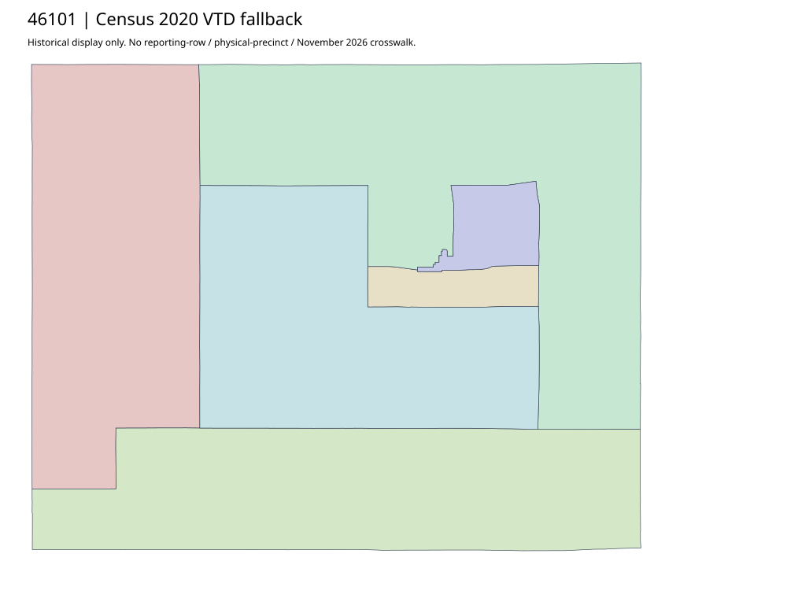

304 ordered indexMoody | 46101
Official auditor parent actually links acquired complete scanned PRECINCT-MAP PDF under2024 upload path. Text layer empty; upload path is not a legal effective date. Physical/current/workbook crosswalk remains unavailable; Census2020 is separate.
4 priority / 6 full historical observations. Parent is a summary ancestor, not additive to leaves. No physical feature matches or current reporting crosswalk approved.
Acquired shared-parent assets
map-46101-8f3949f46109 | complete1-page PDF; all-page contact sheet; complete page1; complete original gzip. Exact reconstruction: python -B scripts/reconstruct.py --id map-46101-8f3949f46109 /private/tmp/map.pdf
Census2020 fallback
6 native historical VTD features. Entire785-feature ZIP original retained once, all66 counties. Yankton has one countywide VTD. No current/reporting allocation. complete original gzip

Full binary/attribute/geometry QA
Observed authority/acquisition routes
Complete SOS authority fields including original blank/masked values: parent inventory. No contacts were sent.
Ordered full children
- Precinct-5 | 792 source votes | priority
- Precinct-3 | 584 source votes | priority
- Precinct-2 | 511 source votes | priority
- Precinct-1 | 498 source votes | priority
- Precinct-4 | 406 source votes | remainder
- Precinct-34 | 398 source votes | remainder